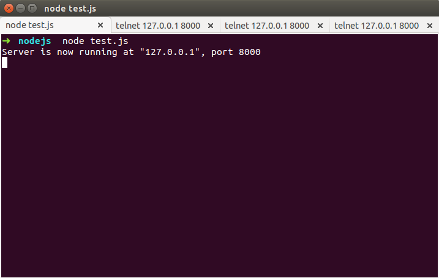
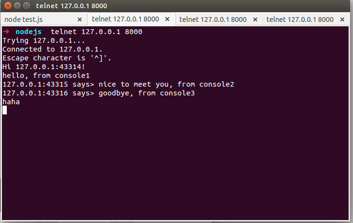
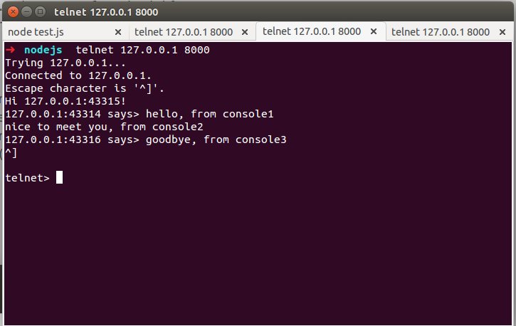
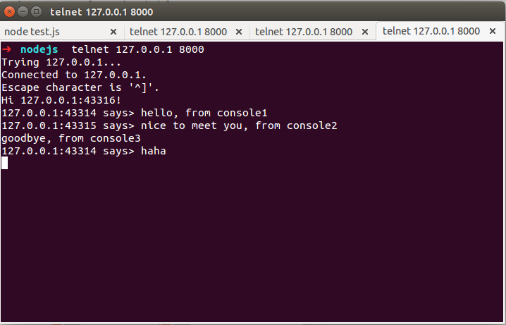

Nodejs初探
Table of Contents
1 背景
出于好奇尝试了nodejs, 看了《Node:Up and Running》，被事件驱动程序和简单明了的方式吸引。
所以尝试跟着写了两个书上的demo感受下
1.1 简单聊天室
1.1.1 代码
Enviroment :node 0.10.25, ubuntu 14.04
一个基于TCP的聊天服务器，可使用Telnet连接，可同时连接多个客户端使用，如果其中一个客户端出问题不会影响其它客户端使用. 代码以及说明如下：
:::javascript
//加载'net'模块，包含了TCP模块
var net = require('net');
//创建一个TCP服务器
//创建一个数组存放连接的客户端
var chatServer = net.createServer(),
clientList = [];
//添加服务器连接的监听事件
//将客户端对应的TCP socket对象'client' 传给callback函数
chatServer.on('connection', function(client){
//client.remoteAddress获得客户端IP地址，
//client.remotePort是客户端接收返回数据的TCP端口，作为client的唯一标识
client.name = client.remoteAddress + ':' + client.remotePort
//client.write方法用来写入发送给客户端的数据
client.write('Hi ' + client.name + '!\n');
//将此客户端放入所有客户端组成的数组
clientList.push(client);
//添加接收到客户端数据的监听事件
client.on('data', function(data){
//定义一个broadcast函数用来发送数据给所有有效的客户端
broadcast(data, client)
});
//添加客户端断开连接的监听事件
client.on('end', function(){
//客户端断开连接后，将此客户端从客户端列表中清除
clientList.splice(clientList.indexOf(client), 1);
});
//添加客户端错误的监听事件
client.on('error', function(e){
//打印出错误内容
console.log(e);
})
})
function broadcast(message, client){
//定义一个存放需要清除的客户端的数组
var cleanup = [];
//遍历所有客户端
for(var i=0;i<clientList.length;i++){
//向除自己意外的客户端发送消息
if(client != clientList[i]){
//判断客户端socket是否能写入数据
if(clientList[i].writable){
//向该客户端写入内容
clientList[i].write(client.name + " says> " + message);
} else {
//如果该客户端不可用则加它加入要清除的列表
cleanup.push(clientList[i]);
//通过Socket.destroy()方法关闭不可写的socket
clientList[i].destroy();
}
}
}
//从客户端列表中移除所有不可写的客户端
for(i=0;i<cleanup.length;i++){
clientList.splice(clientList.indexOf(cleanup[i]), 1);
}
}
//设置服务器监听8000端口
chatServer.listen(8000);
//服务器上打印初始信息
console.log('Server is now running at "127.0.0.1", port 8000');
1.1.2 运行结果如图：
- 服务器端

- console1, 使用telnet连接服务器

- console2, 使用telnet连接服务器

- console3, 使用telnet连接服务器

1.2 express
需要注意的是，版本变迁后，书上有些代码已经过时了 Enviroment :node 0.10.25, ubuntu 14.04
////app.js, , server side， simple twitter //引入express模块，它express会在后台调用http模块 var express = require('express'); //创建服务器 书上的express.createServer()方法已经不再使用了 var app = express() ; // 同样，新版本bodyparser也被分离出来了 var bodyParser = require('body-parser') var urlencodedParser = bodyParser.urlencoded({ extended: false }) //指定监听端口 app.listen(8000); //初始化数组用来存放twitter var tweets = []; //和使用http方式不同的是，不用为请求事件调用监听器，通过http匹配的方式来指定回掉函数 //而且可以根据请求的方式过滤(eg.get,post...) app.get('/', function(req, res) { // 不需要像http那样先发送header然后再返回内容，直接用send()方法 // send()方法会发送header,同时还会调用response.end()方法结束response res.send('Welcome to Node Twitter') }); // express.bodyParser()是一个中间件，用来将客户端post数据转化为javascript对象 // 如果不调用 express.bodyParser()，就需要手动处理请求的数据 // 新版本用上面指定对urlencodedParser app.post('/send', urlencodedParser, function(req, res) { // req.body包含post数据对应的对象 if (req.body && req.body.tweet) { tweets.push(req.body.tweet); // 不需要手动序列化，res.send()会自动进行，并添加http header res.send({status:"ok", message:"Tweet received"}); } else { res.send({status:"nok", message:"No tweet received"}); } }); app.get('/tweets', function(req, res) { res.send(tweets); })
// a simple Post test, 用来测试上述api // assert模块来对返回值进行测试 var http = require('http'), assert = require('assert'); //配置http.request的属性 var opts = { host: 'localhost', port: 8000, path: '/send', method: 'POST', headers: {'content-type':'application/x-www-form-url-encodeed'} }; //利用利用http模块来发送请求 var req = http.request(opts, function(res) { //指定接受数据的编码方式 res.setEncoding('utf-8'); //不同于express中的方式，这里手动处理返回的数据流 var data = ""; res.on('data', function(d) { data += d }); //指定end回调函数 res.on('end', function() { assert.notStrictEqual指定对数据进行“==”级别对检查 assert.notStrictEqual(data, '{status:"ok", message:"Tweet received"}') }); }) //调用req.write来指定发送的数据 req.write('tweet=test'); //表示数据已经发送完毕 req.end();